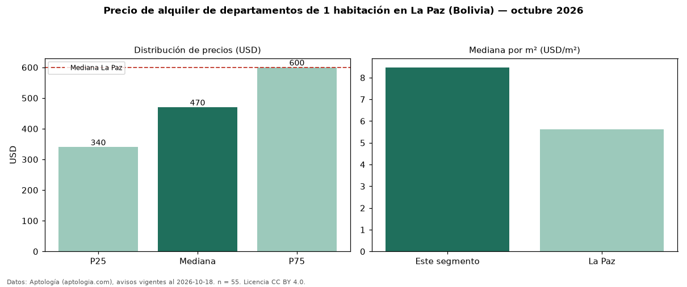

Precio de alquiler de departamentos de 1 habitación en La Paz (Bolivia) — octubre 2026
En La Paz (Bolivia), la mediana de canon mensual de departamentos de 1 habitación es USD 470, según 55 avisos vigentes. Frente a la mediana de todos los departamentos en alquiler de La Paz (USD 600), queda 22 % por debajo. Por metro cuadrado, la mediana es USD 8,47/m² al mes (n = 54 avisos con área). Con el precio por m² de venta del mismo segmento (USD 1.327/m²), la rentabilidad bruta implícita es 7,7 % anual (aproximación con medianas de ofertas distintas). El área mediana anunciada es 55 m². La cuota de mantenimiento o condominio mediana declarada es USD 35,00 al mes (n = 34), aparte del canon. La mitad central de los avisos va de USD 340 a USD 600 (razón 1,8), una dispersión moderada. Datos: Aptología (aptologia.com), CC BY 4.0 — https://www.aptologia.com/bo/alquiler/la-paz. Archivos: PDF, CSV con las cifras y gráfica PNG.

| Avisos únicos | 55 |
|---|---|
| Percentil 25 | COP 340 |
| Mediana | COP 470 |
| Percentil 75 | COP 600 |
| Mediana por m² | COP 8 |
Fuente: avisos vigentes de portales inmobiliarios recopilados por Aptología, deduplicados (mínimo 30 avisos únicos por celda). Precios pedidos, no cerrados. Fecha: 2026-10-18.